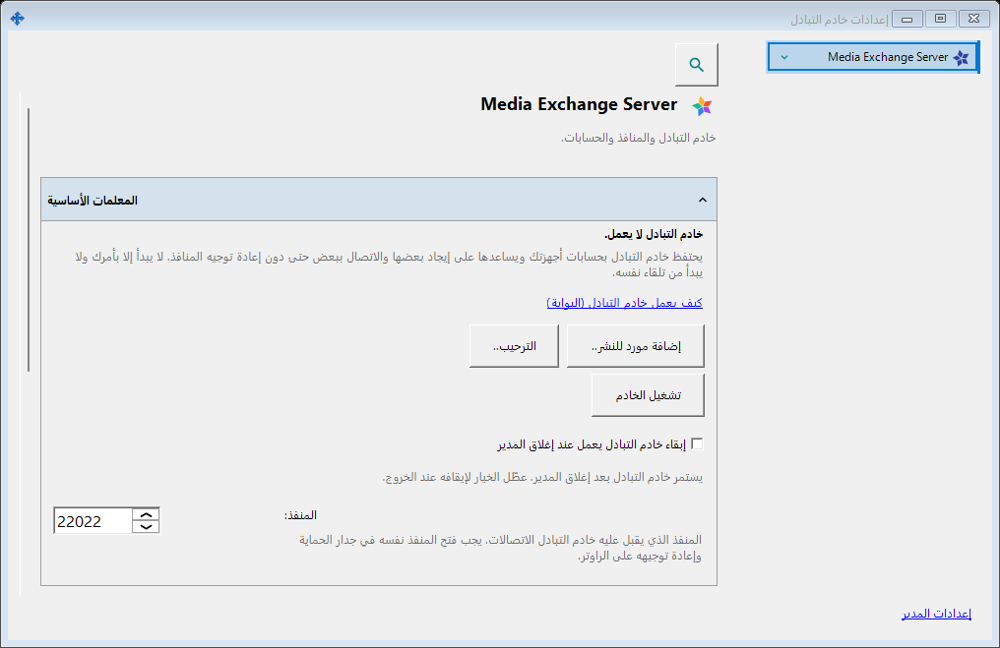
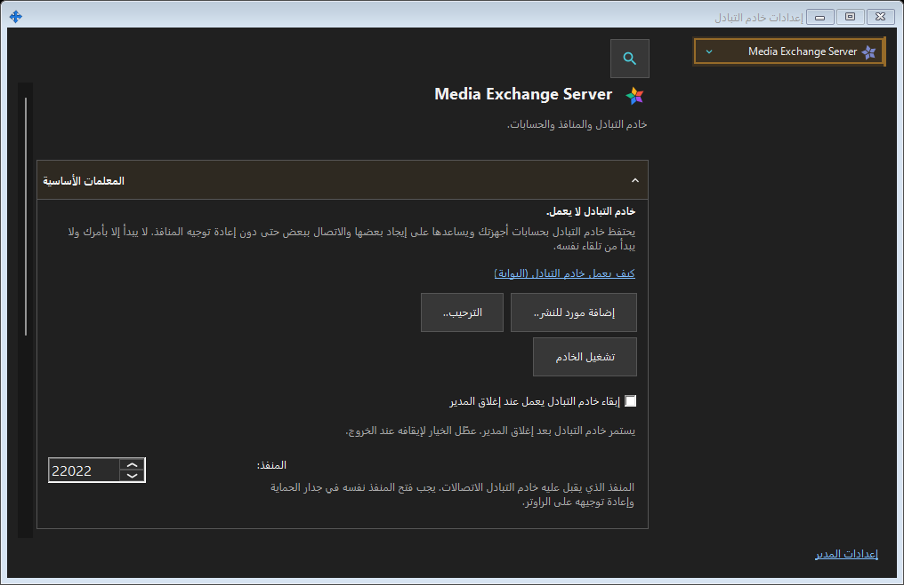

إعدادات خادم التبادل
الغرض من هذه النافذة
SFTP: المنفذ وحد الاتصالات والشبكة المحلية وخدمة Windows. خادم التبادل: العنوان وTLS والحسابات والأجهزة والدعوات والخدمة والسجلات والإدارة البعيدة.


بهذا الترتيب
افتح من منطقة الإعلام أو روابط المكونات. فتح النافذة وإغلاقها لا يشغل أو يوقف خادماً. تسجيل الدخول البعيد لا يتطلب خادماً محلياً.
عناصر النافذة
إعدادات خادم التبادل
SFTP: المنفذ وحد الاتصالات والشبكة المحلية وخدمة Windows. خادم التبادل: العنوان وTLS والحسابات والأجهزة والدعوات والخدمة والسجلات والإدارة البعيدة. افتح من منطقة الإعلام أو روابط المكونات. فتح النافذة وإغلاقها لا يشغل أو يوقف خادماً. تسجيل الدخول البعيد لا يتطلب خادماً محلياً.